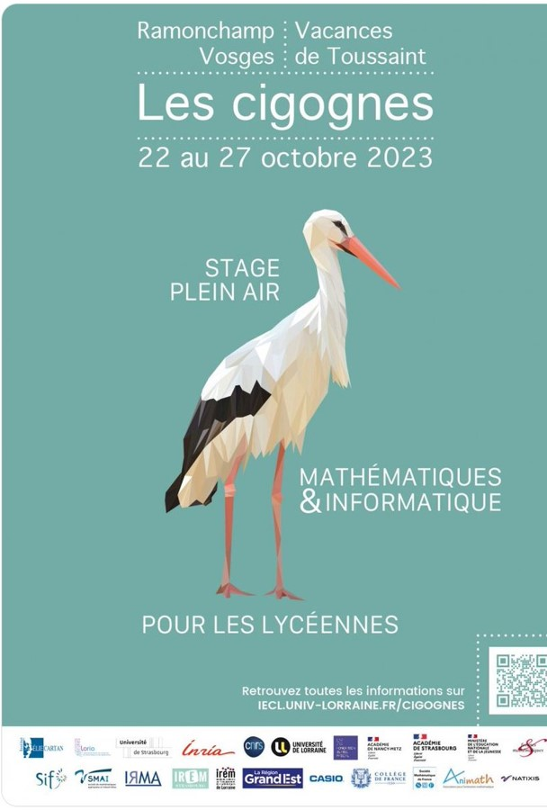
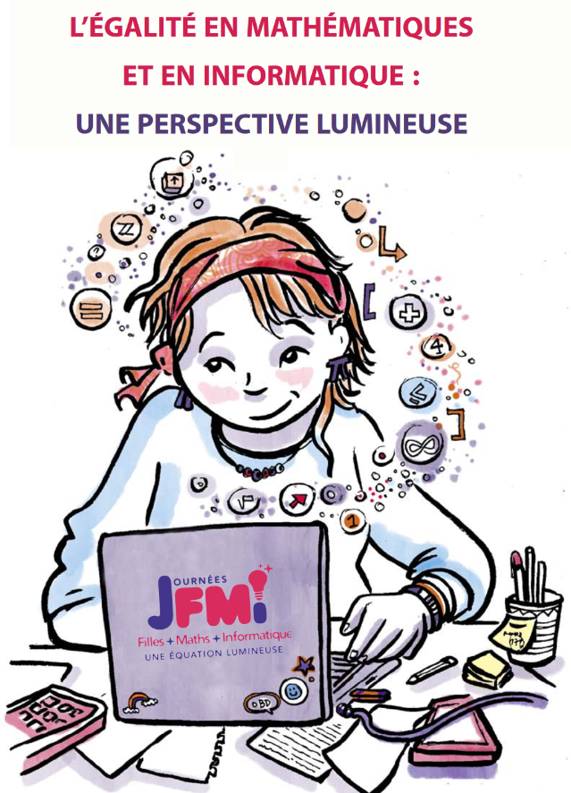
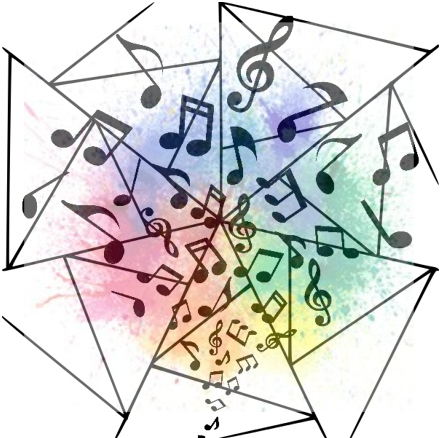
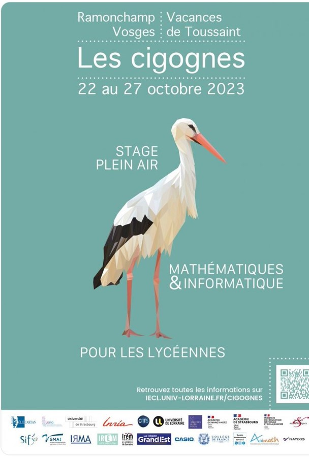
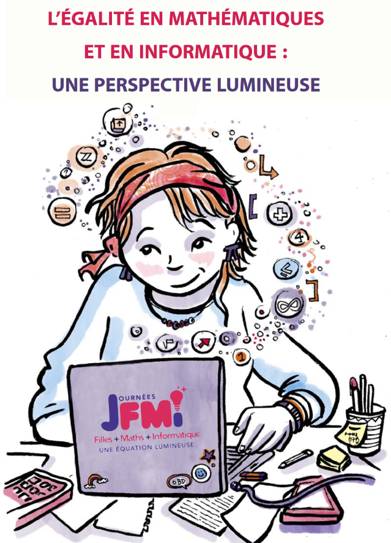
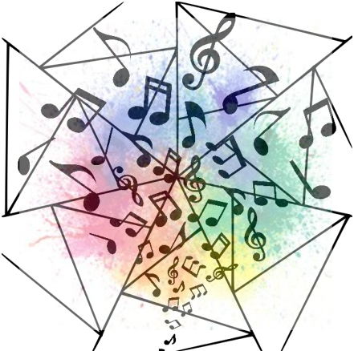
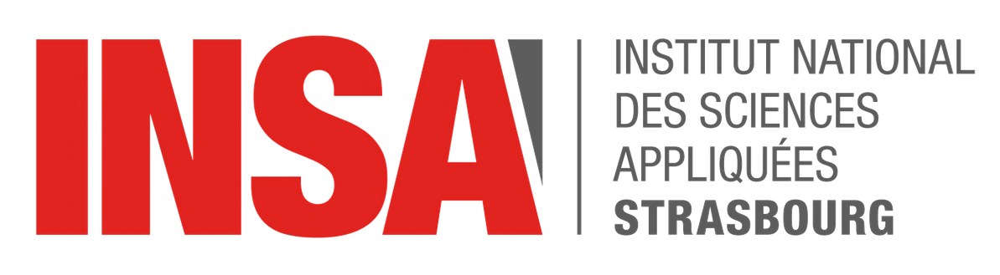
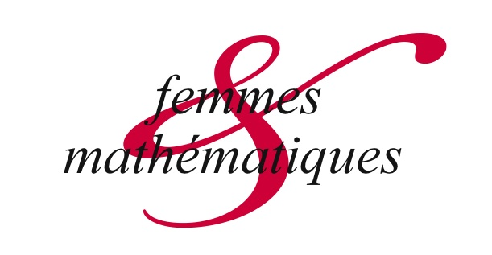
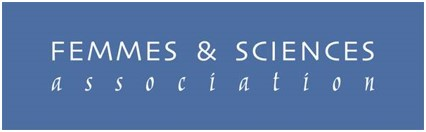

Rendez-vous des Jeunes Mathématiciennes et informaticiennes
Le RJMI est une rencontre entre lycéennes qui a lieu à l'Université de Strasbourg depuis 2018, et dont l'objectif est
d'encourager et de soutenir la poursuite vers des filles vers les études scientifiques. Durant trois jours, les lycéennes
de la seconde à la terminale découvrent le milieu universitaire, explorent des sujets de recherche, rencontrent des femmes
mathématiciennes et informaticiennes, assistent à des conférences et participent à des discussions autour des stéréotypes de genre.
Le stage est fédéré par les associations
Animath et
Femmes & Mathématiques.
Avec Laurène Préhaut,
Céline Van Landeghem, Louise Martineau, Claire Schnpebelen et Roxana Sublet,
nous avons pris en charge les éditions 2022, 2023 et 2024. Nous préparons actuellement l'édition 2025.
A Strasbourg, le projet est soutenu par l'ITI IRMIA++ et le CNRS.
Voici un exemple de programe du stage.
Pour plus d'informations sur le RJMI, rendez-vous sur la page dédiée.
Sciences, un métier de femmes
Le 15 mars 2024 s'est déroulée à l'INSA de Strasbourg la première journée "Sciences un métier de femmes", à destination des lycéennes d'Alsace.
Calquée sur un modèle déjà existant à Lyon depuis 2017, la journée SMF vise à faire intéragir une centaine de lycéennes avec des ambassadrices
de domaines scientifiques divers et variés (physique, maths, biologie, informatique, ingénierie,...) et dans secteurs différents
(entreprise, universitaire, académique). Les jeunes filles assistent également à une conférence sur les stéréotypes de genre donnée par une sociologue.
La BD récapitulative de la journée, dessinée par l'illustratrice
Lauraline Feltz.
Cette journée est fédérée par l'association Femmes & Sciences.
A Strasbourg, je suis impliquée dans l'organisation de l'événément qui est pilotée par Véronique Pierron-Bohnes,
référente Femmes & Sciences dans le Grand Est.
La prochaine édition de la SMF de Strasbourg aura lieu le 3 mars prochain à l'UFR de math-info. D'autres éditions Grand Est sont également programmées à Nancy et Mulhouse en février et mars 2025.
Pour plus d'informations sur la journée SMF, rendez-vous sur la page dédiée.
Les Cigognes
Les Cigognes, c'est un stage math-info plein air calqué sur un modèle déjà existant à Marseille depuis 2019 : les Cigales.
Ce stage est à destination des lycéennes de tout le Grand Est, de la seconde à la terminale : sur le même principe qu'un RJMI et durant une semaine,
les filles travaillent sur des sujets de recherche ouverts, asssitent à des conférences et échangent avec des professionnelles en mathématiques et en informatique et participent à des discussiions
autour des stérétypes de genre.
Le stage est organisé par Clémentine Courtès de l'Université de Strasbourg,
Marie Duflot-Kremer, Anne de Roton
et Samuel Tapie de l'Université de Lorraine. J'y participe en tant qu'intervenante sur la semaine.
La vidéo récapitulative de l'édition 2023.
Pour plus d'informations sur les Cigognes, rendez-vous sur la page dédiée.
Mathémusique
La présentation du groupe de recherche et les différentes thématiques qui y seront abordées.
D'autres actions autour de la thématique filles et maths
Filles+math+informatique : une équation lumineuse
Je participe régulièrement à des journées FMI fédérée par les associations Femmes & Mathématiques et Animath, et dont le but est d'agir pour une plus grande mixité dans les filières scientifiques et techniques. Les lycéennes assistent à des conférences, des discussions autour des stéréotypes de genre et participent à des speed-meeting, ce qui leur permet de rencontrer des professionnelles scientifiques.
Cordée de la Réussite "Décodeuses d'informatique"
J'ai participé régulièrement lors de mon doctorat à des journées de Cordée
de la Réussite "Décodeuses d'informatique", en tant qu'intervante. Ces journées sont coordonnées par Baptiste Lafabrègue
et organisées par l’UFR de Mathématique et Informatique de l’Université de Strasbourg, qui porte la cordée «décodeuses d’informatique»
sur le thème « égalité des chances et égalité filles-garçons en informatique ». Elle a pour objectif d’améliorer la vision de ce qu’est l’informatique
chez les élèves de collège et lycée, et d’encourager les vocations pour les études d’informatique, notamment en luttant contre les stéréotypes de genre.
Il s’agit de favoriser un recrutement plus inclusif dans les filières informatiques, où l’orientation est très genrée, dès la spécialité NSI au lycée.
Pour plus d'informations sur les cordées, rendez-vous sur la page dédiée.
Cérémonie de remise de diplômes de master
Le 6 mai 2022, l'université de Strasbourg a organisé la première cérémonie de remise de diplômes pour les master de mathématiques. Celle-ci concernait les promotions 2020 et 2021 et s'est déroulée au Palais Universitaire. Lors de cette cérémonie, j'ai été invitée a prononcé un discours sur la place des femmes en mathématiques, relativement à mon prorpre parcours.
|  |  |  |